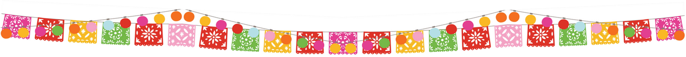

Travel to Mexico
Useful tips and links:

Stay in Veracruz
Travel within Mexico:
- The autobus service ADO connects most of the cities in the south-east of
Mexico.
It is highly recommended to Travel only with ADO GL or ADO Platino
- We advice you to take public transportation according to following priorities depending on the location.
- Taxi Seguro (found at airports and bus stations)
- Uber or Taxi ordered by the hotel or Taxi from a trusted company
- Taxi found in the streets (except mexico city)
- Public transport
-
In Mexico City be aware of pickpockets in the Metro, specially at Tepito station. Better order an Uber or travel by MetroBus.
Avoid the pink metro line because it is always super crowded.
To do in Veracruz
- City Tour
- Aquarium
- Boca del Rio Boulevard
- Cinema VIP, 4DX, IMAX
- Restaurants
- Il Veneziano
- Los Farolitos
- La Parroquia
- Sirlon
- Los Giros
- La Parrilla Veracruzana
- Bars and Coffee
Other Places to travel to:
- Mexico City (CDMX)
- Jalisco
- Merida
- Cancun / Playa del Carmen